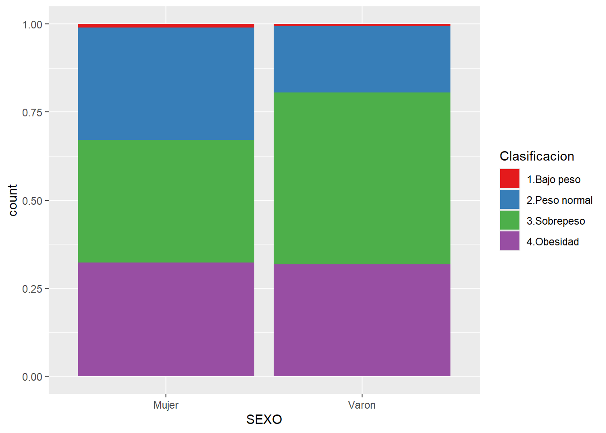

library(tidyverse)
library(readxl)
datos <- read_excel("DM.xlsx")
glimpse(datos)Practica integradora tidyverse 1
Residencia de Epidemiología
En esta practica integradora vamos a trabajar con una tabla de datos en formato Excel que podrán descargar de este enlace.
El archivo llamado DM.xlsx contiene datos ficticios de personas que respondieron una encuesta y que se les realizó una serie de mediciones y análisis de laboratorio.
Consta de 1030 observaciones de personas diferentes y son 19 las variables recolectadas.
Como primer paso le pedimos que cree una nueva carpeta en el lugar de preferencia de su computadora (puede ser Mis documentos, Escritorio, etc.) con el nombre Practica_integradora1.
Luego deberá guardar el archivo DM.xlsx descargado dentro de la carpeta recién creada.
A continuación ingrese a RStudio y construya un nuevo proyecto a partir de un directorio existente (Existing Directory) seleccionando la carpeta “Practica_integradora1”.
Una vez finalizada la operación genere un nuevo script de R y guardelo con su nombre de pila.
Escriba y ejecute las siguientes lineas:
En las anteriores líneas de código activamos los paquetes contenidos en tidyverse y el paquete readxl que permite importar datos de archivos con formato Excel.
Luego leímos el contenido de DM.xslx y visualizamos su estructura con glimpse()
Responda las siguientes consignas construyendo y ejecutando código R dentro del script.
Utilice comentarios (iniciados con #) cuando deba responder preguntas tipo texto o si desea realizar cualquier aclaración.
Cuántos valores perdidos tiene la variable LDL?
Resuma la variable EDAD mediante el calculo de media y desvío estándar
Construya un histograma de la variable EDAD. Defina el intervalo de clase en 10 años.
Genere una tabla de frecuencia absoluta y porcentual de la variable SEXO.
Calcule mediana y rango intercuartílico de la variable PESO según SEXO.
En que tipo de gráfico podría visualizar los estadísticos de posición y dispersión anteriores?
Haga un boxplot de la variable PESO según SEXO.
A partir del PESO y la TALLA calcule el IMC en otra variable y déjela almacenada en la misma tabla datos. Tenga en cuenta que la fórmula del IMC es \(PESO/TALLA^2\) y que las unidades correctas son kgs para PESO y metros para TALLA.
Dibuje un gráfico de densidad para la nueva variables IMC según SEXO. Incorpore transparencia del 50 % con el fin de poder visualizar el solapamiento de las curvas.
Categorice el peso en función del IMC según la siguiente tabla:
| IMC | Clasificación |
|---|---|
| < 18,5 | 1.Bajo peso |
| >= 18,5 y < 25 | 2.Peso normal |
| >= 25 y < 30 | 3.Sobrepeso |
| >= 30 | 4.Obesidad |
Llame Clasificacion a la nueva variable y guárdela dentro de datos.
- Construya un gráfico de barras de la variable SEXO donde podamos visualizar la distribución proporcional de las categorías de Clasificacion. Para lograr esto defina el argumento position en “fill”. Además asegúrese de no tener en cuenta a los valores NA de la variable Clasificacion. El producto final debería verse así:

- Almacene en la tabla datos una nueva variable denominada HTA con valores Si y No según la siguiente condición:
Si la TAS es mayor o igual a 140 o la TAD es mayor o igual a 90 entonces HTA valdrá “Si”, de lo contrario será “No”.
Muestre una tabla de frecuencia absoluta de HTA según condición de fumar (TABACO) excluyendo los valores perdidos de TABACO.
Utilizando las variables HTA, TABACO y SEXO realice un gráfico igual al siguiente (preste atención a las categorías de TABACO):
- Categorice los valores de A1C (hemoglobina glicosilada) en una nueva variable Tol_Glucosa a partir de la siguiente tabla:
| A1C | Tol_Glucosa |
|---|---|
| < 5,7 | Normal |
| >= 5,7 y < 6,5 | IGT |
| >= 6,5 | DM |
- Cree una nueva tabla llamada diabetes con las observaciones que tengan el valor DM en variable Tol_Glucosa y las siguientes variables: ID, EDAD, SEXO, Clasificacion, HTA y A_DIAB. Asegúrese que la tabla se almacene ordenada de forma creciente por el número de ID.
- Calcule la mediana de la edad de los participantes y utilicela para construir una nueva variable llamada grupo_edad1 que divida la muestra en dos (menores a la edad mediana y mayores o iguales a la edad mediana). Guardela dentro del dataframe de trabajo.
- Genere y almacene dentro de dataframe una nueva variable denominada grupo_edad2 a partir de la EDAD según el siguiente cuadro:
| EDAD | grupo_edad2 |
|---|---|
| < 25 | 1.Hasta 24 años |
| >= 25 y <= 39 | 2.de 25 a 39 años |
| >= 40 y <= 49 | 3.de 40 a 49 años |
| >= 50 y <= 64 | 4.de 50 a 64 años |
| >= 65 | 5.65 y mas años |
- Construya un gráfico para observar la correlación de valores de cintura en centímetros (variable CINTURA) y el índice de masa corporal (IMC). Que gráfico se le ocurre que podría mostrar esta relación? Se observa relación? De qué forma?
- Que otro gráfico podría utilizar para mostrar esta misma relación, pero utilizando la variable clasificacion que categoriza ordinalmente la variable IMC? (esta variable fue construida en la primera parte del ejercicio)
- Resuma las categorías de la variable Tol_Glucosa mediante una tabla de frecuencias porcentual según condición de sedentarismo (variable SEDENTARIO). Fuerce el orden para que aparezca de la siguiente forma, acompañada de su frecuencia porcentual, tomando en cuenta como total a las observaciones según sedentarismo (porcentaje de categorías sobre total del grupo Si y porcentaje de categorías sobre total del grupo No):
- Construya un histograma de la variable HDL con un ancho de barra de 10 unidades, facetado por la variable grupo_edad1.
- Construya un gráfico de barras de la variable grupo_edad2 relacionado al consumo de alcohol (variable ALCOHOL) donde podamos visualizar la distribución absoluta. El producto final debería verse así:
Una vez finalizados todos los puntos guarde el archivo con el script y envíelo por mail a christianballejo@gmail.com